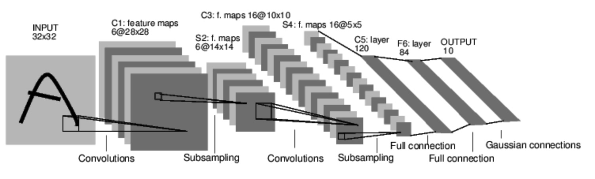
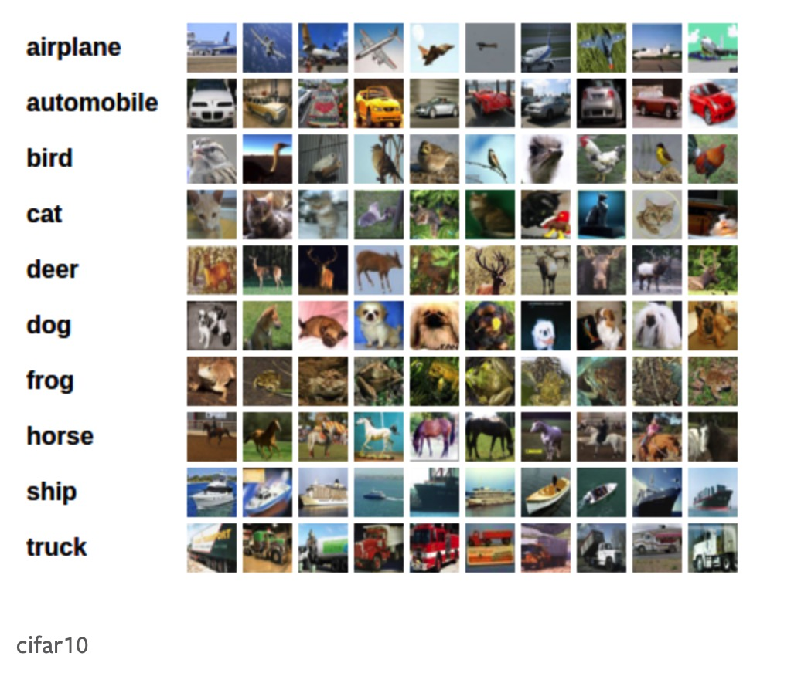
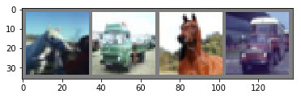
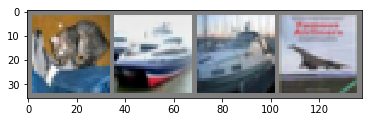

本文介绍了使用pytorch 建立神经网络的一些步骤：
- 如何定义网络
- 如何定义损失函数
- 如何反向传播
并介绍了一个训练图片分类器的实例
本文参考自DEEP LEARNING WITH PYTORCH: A 60 MINUTE BLITZ
神经网络
我们可以使用 torch.nn 包来构建神经网络
nn 依赖于 autograd 来定义模型并微分它们。nn.module 包含层，方法 forward(input) 返回 output
我们看一个分类数字图像的一个网络

这是一个简单的前馈网络，将数据输入网络来得到输出
神经网络的训练步骤通常如下：
- 定义有一些有可学习参数（权重）的网络
- 迭代输入的数据集
- 通过网络处理输入
- 计算损失
- 反向传播网络的参数
- 更新权重
定义网络
我们来定义一个网络：
import torch
import torch.nn as nn
import torch.nn.functional as F
class Net(nn.Module):
def __init__(self):
super(Net, self).__init__()
# 输入图像 channel 为 1 输出 channel 为 6，5x5 的方形卷积
# kernel
self.conv1 = nn.Conv2d(1, 6, 5)
self.conv2 = nn.Conv2d(6, 16, 5)
# affine operation y = Wx + b
self.fc1 = nn.Linear(16*5*5, 120)
self.fc2 = nn.Linear(120, 84)
self.fc3 = nn.Linear(84, 10)
def forward(self, x):
# 2x2 的 max pooling
x = F.max_pool2d(F.relu(self.conv1(x)), (2,2))
# 如果 size 是 正方形，可以只标明一个数字
x = F.max_pool2d(F.relu(self.conv2(x)), 2)
x = x.view(-1, self.num_flat_features(x))
x = F.relu(self.fc1(x))
x = F.relu(self.fc2(x))
x = self.fc3(x)
return x
def num_flat_features(self, x):
size = x.size()[1:]
num_feat = 1
for i in size:
num_feat = num_feat * i
return num_feat
net = Net()
print(net)Net(
(conv1): Conv2d(1, 6, kernel_size=(5, 5), stride=(1, 1))
(conv2): Conv2d(6, 16, kernel_size=(5, 5), stride=(1, 1))
(fc1): Linear(in_features=400, out_features=120, bias=True)
(fc2): Linear(in_features=120, out_features=84, bias=True)
(fc3): Linear(in_features=84, out_features=10, bias=True)
)a = torch.rand(4,3)
for i in a.size():
print(type(i))<class 'int'>
<class 'int'>你只需要定义 forward 函数，因为使用了 autograd 所以 backward 被自动定义了，你可以在 forward 函数中使用任何的 Tensor operations
net.parameters() 返回模型中可学习的参数
params = list(net.parameters())
print(len(params))
print(params[0].size()) # conv1 的权重10
torch.Size([6, 1, 5, 5])我们尝试用随机的 32x32 的数据输入
需要注意的是我们的期望输入的是 32x32，所以如果要用 MNIST 数据集的话，需要 resize 图像的大小至 32x32
input = torch.randn(1, 1, 32, 32)
out = net(input)
print(out)tensor([[ 0.0619, 0.0674, -0.0848, 0.0652, 0.0308, 0.0820, -0.0906, -0.0236,
0.0081, -0.0737]], grad_fn=<AddmmBackward>)将所有参数的梯度置 0 然后用一个随机的梯度来反向传播
net.zero_grad()
out.backward(torch.rand(1, 10))torch.nn 只支持 mini-batches 的数据，而不是一个单独的数据。
比如，nn.Conv2d 接收 4D 的 Tensor : nSamples x nChannels x Height x width
如果你有一个单独的数据，需要用 input.unsqueeze(0) 来增加一个假的 batch 的纬度
a = torch.randn(2,4,3)
print(a.unsqueeze(0).size())torch.Size([1, 2, 4, 3])或者我们可以 view() 来改变 tensor 的纬度
a = torch.randn(2,4,3)
print(a.view(1,2,4,3).size())torch.Size([1, 2, 4, 3])再进一步往前之前，我们先总结一下之前学过的类
Recap:
torch.Tensor: 支持 autograd operations 比如backward()的多维数组，并且也携带着基于这个 Tensor 的 梯度nn.Module: 神经网络模块nn.Parameter: 也是 Tensor 的一种，它被自动注册成参数了当被 Module 指定为一个属性autograd.Function: 实现了 autograd operations 的 前向和反向的定义，每个 Tensor operation 创建至少一个Function 结点，它与创建这个 Tensor 的函数连接并编码了它的历史
损失函数
损失函数以 (output, targets) 作为输入，计算得到表示输出与目标值之间的差距的值
在 nn 下有很多损失函数，一个简单的损失函数是 nn.MSELoss 计算均方误差
output = net(input) # 输出是 1x10 的矩阵
target = torch.randn(1,10)
criterion = nn.MSELoss()
loss = criterion(output, target)
print(loss)tensor(1.0470, grad_fn=<MseLossBackward>)计算图如下所示：
input -> conv2d -> relu -> maxpool2d -> conv2d -> relu -> maxpool2d
-> view -> linear -> relu -> linear -> relu -> linear
-> MSELoss
-> loss 所以当我们调用 loss.backward() 整张图就基于 loss 被微分了，图中所有 requires_grad = True 的 Tensors 将会让它们的 .grad Tensor 加上梯度
print(loss.grad_fn) #MLELoss
print(loss.grad_fn.next_functions[0][0]) #Linear
print(loss.grad_fn.next_functions[0][0].next_functions[0][0]) #ReLU<MseLossBackward object at 0x10f663be0>
<AddmmBackward object at 0x10f663ac8>
<AccumulateGrad object at 0x10f663be0>Backprop
我们只需要做 loss.backward() 就可以完成反向传播，在此之前需要先将现有的梯度置 0
现在我们调用 loss.back() 然后观察 conv1’bias 的梯度前后的变化
net.zero_grad()
print('conv1.bias.grad before backward')
print(net.conv1.bias.grad)
print('conv2.bias.grad after backward')
loss.backward()
print(net.conv1.bias.grad)conv1.bias.grad before backward
tensor([0., 0., 0., 0., 0., 0.])
conv2.bias.grad after backward
tensor([ 0.0115, -0.0096, -0.0027, -0.0011, 0.0020, -0.0002])Read Later:
神经网络包包含很多的模块和损失函数，更全的文档点击这里
更新权重
在实践中最简单的更新法则是随机梯度下降(SGD):weight = weight - lr * gradient
我们可以通过很简单的 python 代码来实现：
lr = 0.01
for f in net.parameters():
f.data.sub_(f.grad.data * lr)然而当你使用神经网络时你希望使用不同的更新规则，比如 SGD, Nesterov-SGD, Adam, RMSProp 等，我们可以通过 torch.optim 这个包来实现
import torch.optim as optim
# 创建自己的 optimizer
optimizer = optim.SGD(net.parameters(), lr=0.01)
optimizer.zero_grad()
output = net(input)
loss = criterion(output, target)
loss.backward()
optimizer.step() # 更新权重训练一个分类器
我们已经见到了如何定义神经网络，计算损失，以及更新网络的权重，现在我们思考
那么关于数据呢
通常来说，当你需要处理图片，文本，音频，视频的时候，我们可以使用标准的 python库将数据载入成 numpy 数组，然后你可以将数组转化为 torch.*Tensor
- 图像：可以使用
Pillow,OpenCV - 音频：可以使用
scipy,librosa - 文本：可以使用 Python 或者 Cython 里本来的库，或者用
NLTK或SpaCy
在视觉方面，我们有一个库叫 torchvision ，有一些常见的数据集比如 ImageNet CIFAR10 MNIST 等数据加载器，还有一些数据转换器比如 torchvision.datasets 和 torch.utils.data.DataLoader
这就提供了很大的便利性，在这份 tutorial 里 我们使用 CIFAR10 数据集，它有：’airplane’,’automobile’,’bird’,’cat’,’deer’,’dog’,’frog’,’horse’,’ship’,’truck’ 这十类，CIFAR10 里的数据都是 3x32x32 的大小

训练一个图片分类器
我们将按顺序做如下操作：
- 用
torchvision载入并且正规化 CIFAR10 的训练集和测试集 - 定义一个卷积神经网络
- 定义一个损失函数
- 用训练集训练网络
- 用测试集测试网络
1.载入 CIFAR10 数据集
在 torchvision 中载入 CIFAR10 是非常简单的：
import torch
import torchvision
import torchvision.transforms as transformstorchvision 数据集的输出是范围是 [0,1] 的 PILImages ，我们想把它转化为 Tensor 并且正规化到 [-1,1]
tranforms.ToTensor() 将numpy array 转化为 范围为[0,1] 的 Tensor
transforms.Normalize((0.5,0.5,0.5),(0.5,0.5,0.5)) 将 channel 正规化使用如下公式：
channel = (channel - mean)/std
所以它被正规化到 [-1,1]
transform = transforms.Compose([transforms.ToTensor(),
transforms.Normalize(mean=(0.5,0.5,0.5), std=(0.5,0.5,0.5))])
trainset = torchvision.datasets.CIFAR10(root='./data', train=True, download=True, transform=transform)
trainloader = torch.utils.data.DataLoader(trainset, batch_size=4, shuffle=True, num_workers=2)
testset = torchvision.datasets.CIFAR10(root='./data', train=False, download=True, transform=transform)
testloader = torch.utils.data.DataLoader(testset, batch_size=4, shuffle=False, num_workers=2)
classes = ('plane', 'automobile', 'bird', 'cat', 'deer', 'dog', 'frog', 'horse', 'ship', 'truck')Files already downloaded and verified
Files already downloaded and verified让我们看一下一些训练集的图像
import matplotlib.pyplot as plt
import numpy as np
dataiter = iter(trainloader) # 将 trainloader 变成可以用 next() 的迭代器
images, labels = dataiter.next()images.size()torch.Size([4, 3, 32, 32])# make_grid() 将一个图像序列整合成一个 栅格的形式
torchvision.utils.make_grid(images).size()torch.Size([3, 36, 138])# 定义一个显示图像的函数
def show(img):
# img 是 [-1,1] 所以我们需要去正规化
# 因为这个 img 的格式是 channel x height x width 的格式，为了将其显示出来我们需要变换成 height x width x channel
img = img / 2 + 0.5
np_img = img.numpy().transpose(1,2,0)
plt.imshow(np_img)
plt.show()# 显示图像
show(torchvision.utils.make_grid(images))
# 显示标签
# .join() 输入 生成器或者其他的一些可迭代对象都是可以的
print(' '.join('%5s' % classes[labels[i]] for i in range(4)))horse truck horse truckfor i in (classes[labels[i]] for i in range(4)):
print(i)horse
truck
horse
truck2.定义一个卷积神经网络
从之前的神经网络那部分内容复制过来代码，将其修改成接收 3 channel 的图像
import torch.nn as nn
import torch.nn.functional as F
class Net(nn.Module):
def __init__(self):
super(Net, self).__init__()
self.conv1 = nn.Conv2d(3, 6, 5)
self.pool = nn.MaxPool2d(2, 2)
self.conv2 = nn.Conv2d(6, 16, 5)
self.fc1 = nn.Linear(16*5*5, 120)
self.fc2 = nn.Linear(120, 84)
self.fc3 = nn.Linear(84, 10)
def forward(self, x):
x = self.pool(F.relu(self.conv1(x)))
x = self.pool(F.relu(self.conv2(x)))
x = x.view(-1, self.num_flat_features(x))
x = F.relu(self.fc1(x))
x = F.relu(self.fc2(x))
x = self.fc3(x)
return x
def num_flat_features(self, x):
size = x.size()[1:]
num_feat = 1
for i in size:
num_feat = num_feat * i
return num_feat
net = Net()3.定义损失函数和 optimizer
我们使用 Cross-Entropy 损失函数 和 带动量的 SGD
import torch.optim as optim
criterion = nn.CrossEntropyLoss()
optimizer = optim.SGD(net.parameters(), lr=0.001, momentum=0.9)4.训练神经网络
我们开始在数据迭代器上不断循环
for epoch in range(2):
running_loss = 0
for i, data in enumerate(trainloader, 0): #start = 0
inputs, labels = data
# 零置梯度
optimizer.zero_grad()
# 前向+反向+optimize
outputs = net(inputs)
loss = criterion(outputs, labels)
loss.backward()
optimizer.step()
# 打印损失历史
running_loss += loss.item()
if i % 2000 == 1999:
print('[%d, %5d] loss: %.3f' % (epoch+1, i+1, running_loss/2000))
running_loss = 0
print('Finished Training ')[1, 2000] loss: 2.196
[1, 4000] loss: 1.855
[1, 6000] loss: 1.677
[1, 8000] loss: 1.604
[1, 10000] loss: 1.535
[1, 12000] loss: 1.487
[2, 2000] loss: 1.407
[2, 4000] loss: 1.377
[2, 6000] loss: 1.355
[2, 8000] loss: 1.331
[2, 10000] loss: 1.304
[2, 12000] loss: 1.291
Finished Training 5. 在测试集上测试网络
我们已经在训练集上训练两次了，现在需要检验网络是否学到了东西。
我们将在测试集上的输出与真实值比较。首先我们来看一下测试集里的图片
dataiter = iter(testloader)
inputs, labels = dataiter.next()
show(torchvision.utils.make_grid(inputs))
print(' '.join('%5s' % classes[labels[i]] for i in range(4))) cat ship ship plane然后让我们来看神经网络对这个输入的输出是什么
outputs = net(inputs)outputs.size()torch.Size([4, 10])输出是十个类别的数值，数值最大的那个就是神经网络认为它应该属于的类别
_, predicted = torch.max(outputs, 1)
print('Predicted: ',' '.join('%5s' % classes[predicted[i]] for i in range(4)))Predicted: cat plane cat horse这看起来并不是很准确，4个中只对了一个
接下来让我们看在整个测试集上的表现
correct = 0
total = 0
with torch.no_grad():
for inputs,labels in dataiter:
outputs = net(inputs)
_, predicted = torch.max(outputs, 1)
total += labels.size(0)
correct += (predicted == labels).sum().item()print('Accuraccy of the Neural Network on the 10000 test images is %d %%' % (100 * correct/total))Accuraccy of the Neural Network on the 10000 test images is 53 %看起来这个网络比随机猜测（10%）要好很多，似乎学到了一些东西
然后我们看一下哪些类是表现的比较好的，哪些是比较差的
class_correct = [0 for i in range(10)]
class_total = [0 for i in range(10)]
with torch.no_grad():
for inputs, labels in testloader:
outputs = net(inputs)
_, predicted = torch.max(outputs, 1)
c = (predicted == labels)
for i in range(4):
label = labels[i].item()
class_correct[label] += c[i].item()
class_total[label] += 1class_correct[748, 671, 367, 506, 360, 322, 801, 518, 466, 603]class_total[1000, 1000, 1000, 1000, 1000, 1000, 1000, 1000, 1000, 1000]for i in range(10):
print('Accuracy of %5s is %2d %%' % (classes[i], 100*class_correct[i]/class_total[i]))Accuracy of plane is 74 %
Accuracy of automobile is 67 %
Accuracy of bird is 36 %
Accuracy of cat is 50 %
Accuracy of deer is 36 %
Accuracy of dog is 32 %
Accuracy of frog is 80 %
Accuracy of horse is 51 %
Accuracy of ship is 46 %
Accuracy of truck is 60 %